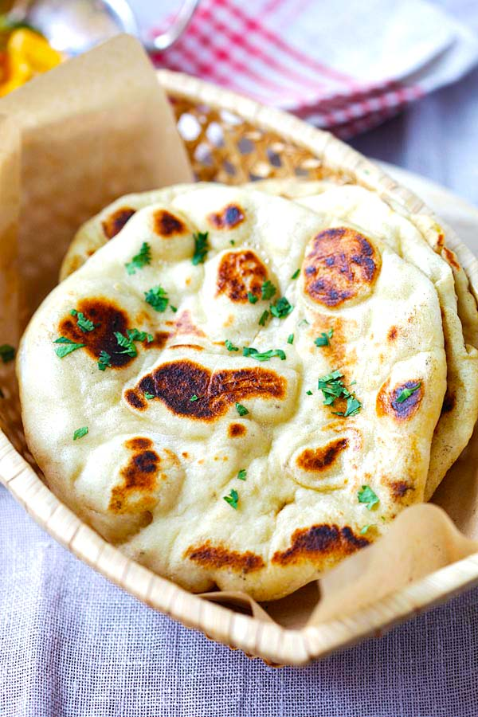

Butter Naan

Description
This homemade naan recipe makes soft, chewy naan with a buttery taste. It is the best I have tasted outside of an Indian restaurant.
Ingredients
- Maida
- Garlic
- Egg
- Salt
- Oil
- Water
Steps
- Make medium-sized balls from the dough.
- Flatten slightly and sprinkle some flour on the dough as well as on the rolling board.
- Heat a skillet or tawa or griddle and keep it on medium-high to high flame. Place the naan bread ready on the hot tawa or skillet or griddle.
- Grill the first side on the flame till you see some charred spots and blisters.
- Turn over and roast the second side too till you see some charred spots